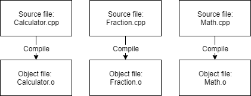
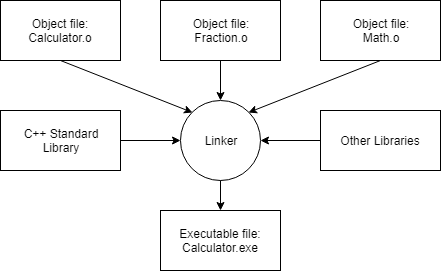

Continuing our discussion of this diagram from the previous lesson (0.4 -- Introduction to C++ development):

Let’s discuss steps 4-7.
Step 4: Compiling your source code
In order to compile C++ source code files, we use a C++ compiler. The C++ compiler sequentially goes through each source code (.cpp) file in your program and does two important tasks:
First, the compiler checks your C++ code to make sure it follows the rules of the C++ language. If it does not, the compiler will give you an error (and the corresponding line number) to help pinpoint what needs fixing. The compilation process will also be aborted until the error is fixed.
Second, the compiler translates your C++ code into machine language instructions. These instructions are stored in an intermediate file called an object file. The object file also contains other data that is required or useful in subsequent steps (including data needed by the linker in step 5, and for debugging in step 7).
Object files are typically named name.o or name.obj, where name is the same name as the .cpp file it was produced from.
For example, if your program had 3 .cpp files, the compiler would generate 3 object files:

C++ compilers are available for many different operating systems. We will discuss installing a compiler shortly, so there is no need to do so now.
Step 5: Linking object files and libraries and creating the desired output file
After the compiler has successfully finished, another program called the linker kicks in. The linker’s job is to combine all of the object files and produce the desired output file (such as an executable file that you can run). This process is called linking. If any step in the linking process fails, the linker will generate an error message describing the issue and then abort.
First, the linker reads in each of the object files generated by the compiler and makes sure they are valid.
Second, the linker ensures all cross-file dependencies are resolved properly. For example, if you define something in one .cpp file, and then use it in a different .cpp file, the linker connects the two together. If the linker is unable to connect a reference to something with its definition, you’ll get a linker error, and the linking process will abort.
Third, the linker typically links in one or more library files, which are collections of precompiled code that have been “packaged up” for reuse in other programs.
Finally, the linker outputs the desired output file. Typically this will be an executable file that can be launched (but it could be a library file if that’s how you’ve set up your project).

The standard library
C++ comes with an extensive library called the C++ Standard Library (usually called “the standard library”) that provides a set of useful capabilities for use in your programs. One of the most commonly used parts of the C++ standard library is the Input/Output library (often called “iostream”), which contains functionality for printing text on a monitor and getting keyboard input from a user.
Almost every C++ program written utilizes the standard library in some way, so it’s extremely common to have the C++ standard library linked into your programs. Most C++ linkers are configured to link in the standard library by default, so this generally isn’t something you need to worry about.
3rd party libraries
You can optionally link third party libraries, which are libraries that are created and distributed by independent entities (rather than as part of the C++ standard). For example, let’s say you wanted to write a program that played sounds. The C++ standard library contains no such functionality. While you could write your own code to read in the sound files from disk, check to ensure they were valid, or figure out how to route the sound data to the operating system or hardware to play through the speaker -- that would be a lot of work! Instead, you’d be more likely to find some existing software project that has a library that already implements all of these things for you.
We’ll talk about how to link in libraries (and create your own!) in the appendix.
Building
Because there are multiple steps involved, the term building is often used to refer to the full process of converting source code files into an executable that can be run. A specific executable produced as the result of building is sometimes called a build.
For advanced readers
For complex projects, build automation tools (such as make or build2) are often used to help automate the process of building programs and running automated tests. While such tools are powerful and flexible, because they are not part of the C++ core language, nor do you need to use them to proceed, we’ll not discuss them as part of this tutorial series.
Steps 6 & 7: Testing and Debugging
This is the fun part! You are now able to run your executable and see what it does!
Once you can run your program, then you can test it. Testing is the process of assessing whether your software is working as expected. Basic testing typically involves trying different input combinations to ensure the software behaves correctly in different cases.
If the program does not behave as expected, then you will have to do some debugging, which is the process of finding and fixing programming errors.
We will discuss how to test and debug your programs in more detail in future chapters.
Integrated development environments (IDEs)
Note that steps 3, 4, 5, and 7 all involve software programs that must be installed (editor, compiler, linker, debugger). While you can use separate programs for each of these activities, a software package known as an integrated development environment (IDE) bundles and integrates all of these features together. We’ll discuss IDEs, and install one, in the next section.